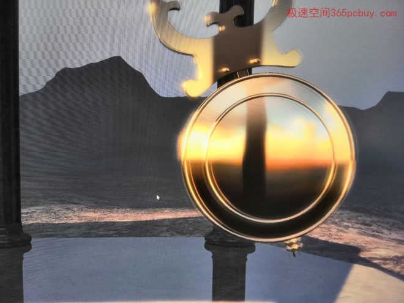

选择显卡的时候，用户经常面临两难的情况：N卡能耗比高，但搭配Nvidia自家的G-SYNC显示器太贵了，基本要3000元起步。便宜的游戏显示器只带有FreeSync，必须用Ａ卡才行，但是A卡功耗又偏高，左右为难。最后多数人选择了N卡+便宜的游戏显示器，于是，显示器上的FreeSync功能成了”火车转弯灯“——摆设。
FreeSync和G-SYNC之间有一道不可逾越的鸿沟，看样子老死不相往来。
这事到了今年出现了转机。
2019年1月，NVIDIA宣布，对G-SYNC划分成了三个级别，第三级为G-SYNC Compatible（G-SYNC兼容模式），NV提供专门的驱动，让市面上仅支持FreeSync/VESA Adaptive-Sync的显示器也能在N卡下开启G-SYNC，只是不保证效果。
这意味着，有部分FreeSync显示器，一旦完美支持G-SYNC，将变相升值大约1500元，用户相当于只花1500元就能买到价值3000元的显示器。
那么，这个G-SYNC/FreeSync到底是什么呢？它们实际是显示器刷新变频技术，刷新率不再是匀速60帧，而是可变的。主要目的是替代传统的垂直同步技术 （V-Sync），消除游戏画面的撕裂、卡顿和延迟。
让我们通过一个餐厅的故事来大概了解一下他们的作用。
角色：
厨师（显卡的GPU）
服务员（显示器）
厨房的窗口上的传菜盘，厨师把菜炒好了就倒进这个盘子里（帧缓冲区，位于显存的一个区域）
菜品：（用户看到的画面）
顾客：要求很高，每秒钟要吃60份不同的菜。（看60张画面）
图一
服务员匀速跑动，每秒钟能端60份菜到顾客的餐桌上，即1/60秒能端一份菜，而厨师的速度如果刚好 1/60秒也做好一份菜，那么就非常完美。可惜，厨师无法保证这个速度，根据菜品的复杂程度，每份菜的制作时间并不同。这里假设第一个1/60秒做了回锅肉，第二份炒青菜只需要1/80秒就做好。 这时会出现： 服务员正在用勺子从传菜盘中把回锅肉一点点地舀到餐盘中（逐行扫描），还没有舀完（图一），厨师又把青菜倒在传菜盘中，这样就把传菜盘中剩下的回锅肉盖住了， 服务员没办法，于是只能接着舀了些青菜，凑齐一份端到顾客餐桌上。这并不是一份完整的菜品，是两份不同的菜拼凑在一起，这就是画面撕裂。
顾客大怒：“你这是什么菜？去把老板喊来！”
餐厅老板发现了问题，对厨师说：“你弄这么快怎么行呢？顾客每天都在投诉，你要放慢速度，和服务员保持同步 。 ”
厨师受了批评，心中不悦，但也没办法，勉强说：“好吧。” 这就是垂直同步 （V-Sync），让厨师被动地跟随服务员的速度。
由于厨师无法保证每份菜的制作时间，如果某份菜要花费较长的时间，服务员来了还没做好，那厨师就只能对服务员说：“去告诉顾客吃慢点，你再回来的时候这份就做好了”。
顾客也没办法，本来第一个1/60秒就要吃红烧肉，第二个1/60秒要吃麻辣鱼，但由于麻辣鱼没有做好，就只能在第二个1/60秒的时候还是吃红烧肉。（两个1/60秒看到的是同一副画面，相当于速度降低到30帧，导致画面卡顿）。 这就是让厨师被动地和服务员同步（垂直同步）的弊端。
【FreeSync】【G-SYNC】
黄老板和苏老板的餐厅都发现了这个弊端。让厨师开足马力，画面要撕裂，降低速度呢？画面要卡顿。真是左右为难啊。
时间到了2013年10月，黄老板想出了办法【G-SYNC】。苏老板在2015年3月想出了办法【FreeSync】
他们告诉厨师说：“你还是得尽力做菜，我让服务员听你的吩咐，和你保持同步。” 于是，厨师又开足了马力，但由于无法控制每份菜的时间，服务员本来是匀速跑动的，为了去适应厨师的做菜速度，现在需要升级到变速运动。
两种办法的区别
【G-SYNC】：给服务员配发一个耳机，菜做好后，厨师对着麦克风轻轻说：“做好了！”服务员听见后就会快速飞奔过来。但是，耳机很贵的，包含授权大概要1500元。（实际是在显示器中装一个芯片，加上授权费大概要1500元，因此G-SYNC显示器都很贵）
【FreeSync】：菜做好后，厨师会大声吼一声：“做好了，快来端！”服务员依靠耳朵听见就跑来了。
显然，FreeSync无需费用。
【G-SYNC】分成了三个级别
在听说了苏老板的“送菜全靠走，通讯全靠吼”方案后，黄老板是很有些不屑的，一度表示：我们不会采用这么落后的方式。
然而，黄老板自己并不愿意出买耳机的钱，而让顾客一次性先出1500元会员费才能来吃饭。这样一来，生意冷清了许多。看着苏老板的餐厅越来越热闹，心里颇不是滋味，眼睛一转，计上心来：何不把自家餐厅的服务员分级？级别高的就配发耳机，级别低的就靠耳朵？这样一来，顾客就有更多的选择权了。要选高级服务员的就一次性交1500元会员费，选低级的就不用交钱了。 于是，服务员被分成了三个等级： 高级：G-SYNC Ultimate 中级：G-SYNC 初级：G-SYNC Compatible。
【三个级别区别】
高级：G-SYNC Ultimate，要求显示器能达到1000nit的亮度、支持HDR、覆盖95%的DCI-P3色域，需要加装硬件芯片，相当于以前G-SYNC的升级版。
中级：G-SYNC，相当于以前G-SYNC的标准，但不再要求安装硬件芯片。
初级：G-SYNC Compatible：改进驱动以兼容FreeSync。
到了这里，大家已经明白了，买NV家的显卡，现在也可以在支持FreeSync的显示器上启用G-sync，FreeSync显示器1000多元就能买到，真是特大喜讯。
但别高兴太早。
NV第一批测试了市面上400多台FreeSync/VESA Adaptive-Sync（注：见文末附录）显示器，结果只有12台完美兼容。（截止发文时间为止，NV官网仍然只有12款型号通过G-SYNC兼容认证 查看详情>>）
没有通过认证的显示器，则可能出现闪屏、黑屏等问题。
看起来G-SYNC兼容的蛋糕不容易吃到。但是，如果真的只有400:12比例，那么大家可以散了，都说老黄良心发现，原来是个噱头。实际上，即使未获得NV认证，也有不少显示器能正常开启G-SYNC兼容模式。
【G-SYNC消除画面撕裂】
NV官方提供了一个钟摆演示程序，可以测试无G-sync和开启后的效果对比。
上图，可以看到画面明显撕裂。

可以看出，在仅支持FreeSync的显示器开启G-SYNC兼容模式后，画面撕裂消除了。
结束语：
横看成岭侧成峰 远近高低各不同，NV启用G-SYNC兼容模式，横看，是NV加入了AMD的生态系统，AMD在标准上胜利了，但侧看，不少为了使用免费FreeSync而不得不购买A卡的用户将转投NV怀抱，向AMD“投降”算什么，拉拢用户才是王道，这是深谋远虑的一步。
看完此文，可以知道：
1、获得G-SYNC兼容模式认证的显示器，性价比会更高。
2、没有通过认证，但却能完美开启G-SYNC兼容的显示器，性价比就比更高还要高，因为它只能卖个没有名分的价格。
热点问答：
问：是否必须用DP接口才能开启G-SYNC兼容模式？
答：对。G-SYNC兼容模式的”兼容“对象是符合VESA DisplayPort Adaptive-Sync协议的显示器。AMD 推出FreeSync技术后，被VESA组织看上了，将其纳入DP1.2a标准规范，因此，FreeSync和VESA Adaptive-Sync实际是一脉相承的，区别是FreeSync是支持HDMI，而VESA Adaptive-Sync只支持DP（1.2a以上版本）。
附录
要体验G-SYNC兼容模式，需要达到以下要求
1、显卡最低型号是GTX650Ti boost 查看能支持的显卡>>
2、安装NV最新驱动
3、显示器需要支持FreeSync/VESA Adaptive-Sync